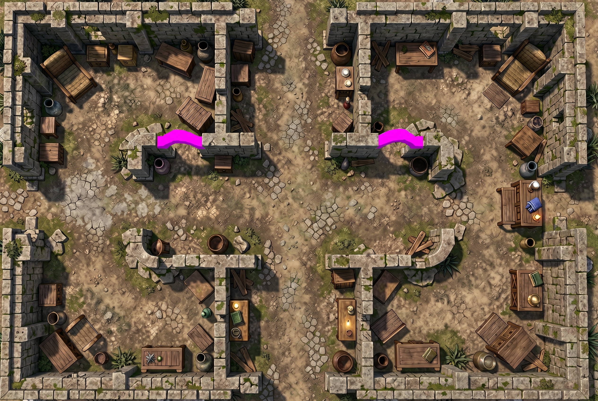
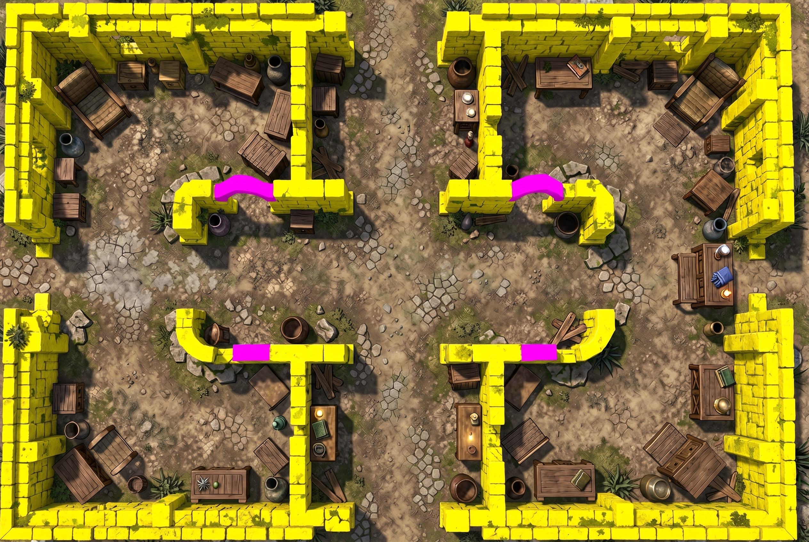

The revised door-pass experiment marks the two clearly arched overhead spans in magenta. The two damaged wall tops below remain unmarked. Supports are taken from the existing walls; the API no longer paints them.

Magenta means a clear visual candidate, not a calibrated confidence percentage. Orange would indicate an uncertain candidate and would never create an opening automatically. Every arch still requires DM review. This test returned two magenta candidates and no orange candidates. No manual mask edits or deselections.
Open / download player walkthrough
The two reviewed openings use the app's full-thickness doorway cut and existing movement and vision rules. Druk crosses each opening in both directions. The two lower wall sections stay solid. This recording uses the ordinary map renderer; arch transparency is tested separately below.
Open / download depth demonstration
Move Druk under the detected upper-left arch. Only the overhead span fades; supporting masonry stays solid. Drag to orbit or pinch to zoom.
Loading Druk…
Isolated depth prototype, not yet integrated into the battlefield. The detected arch top uses original map pixels. Clearance and stone depth are estimates; the floor beneath it uses a nearby map-art sample because the original image does not contain the hidden floor. The wider raised-wall experiment remains parked.
